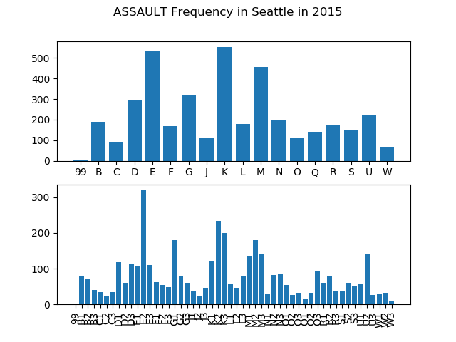
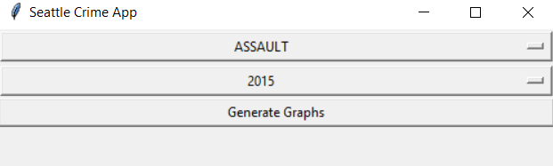

Using publically available datasets, I was able to map out the crime in Seattle. Data is found HERE
Using Tkinter to Create a GUI:


Using Tkinter combined with Matplotlib I created a GUI to display the crime statistics for any given crime and year.
The results are displayed in bar graph format and are grouped by crime district.